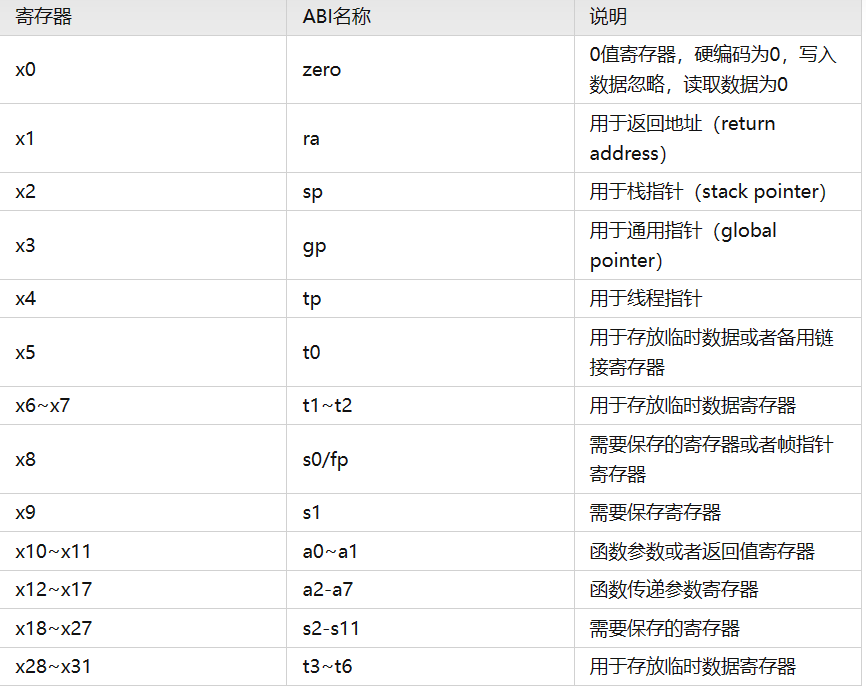
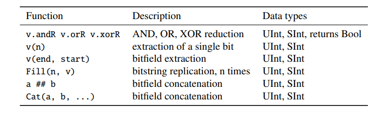

CS61C great idea in computer architecture
environment setup
overview of great ideas
Refer to the first PPT
- Abstraction (Layers of Representation/Interpretation)
- Moore’s Law
- Principle of Locality/Memory Hierarchy
- Parallelism
- Dependability via Redundancy
number representation
float number
We have already learnt the conception of float number in the ZJU-course and we will add some things
Biased notation
special number
If the exponent is 255 and the significand is 0 express endless
C intro
compile
C compiler map the C program directly to the machine code(01-string)
Here are two steps, compiling the .c file to .o file and link the .o files into executables.
We can have the reaonable compilation time and using the makefiles to allow only modified files to be recompiled. C has the excellent run-time performance.
**Note: ** why we use "slow" python to do the scientific computation?
That's because python has a lot of libraries to accelerate the excutation and some libraries can access the GPU-specific resources.
some disadvantages
For C, its compile files and executable(可执行文件) are architecture-specfic and os-specific. Executable must be rebuilt on each new system.
c pre-processor (cpp
C source file first pass through macro processor. It will replace the comments and deal with the cpp commands( begin with #)
variable
the way of name we may use
sum_of_squares
basic variables
The size of the basic variable in different machine is different, So we will recommend use the intN_t uintN_t
1 | |
macro
macros will be deal with in cpp. It can replace the variable and create a small function. But all it does is string replacement.
new features in C
variable-length non-global array.
command arguments
int main(int argc,char *argv[])
argc express the number of strings on the command line, and the argv contains it. The excutable counts is one.
enums
1 | |
enums is a group of related integer constants
use gdb to debug
Before we begin debug, we should use this command to make the executable file
1 | |
some basic command for gdb
1 2 3 4 5 6 7 8 | |
basic print format
1 2 3 4 5 6 7 8 9 10 11 12 13 14 15 | |
using vim
复制粘贴
1 2 3 4 | |
打开新的文件
1 2 | |
显示行号
1 | |
using the valgrind
write the makefile
RISC-V intro
We will use the 32-bit RISC-V in the class.
the basic calculate instruction
1 2 3 | |
memory address
A address and B address has distance of 4 bytes
1 word = 4 bytes = 32 bits. And data is rarely smaller than 8 bits.
It follows the little-endian convention.
| 103 | 102 | 101 | 100 |
|---|---|---|---|
| 0 | 0 | 0 | 1 |
the result is "0001"
Get the memory
1 2 | |
Besides the normal "lw" and "sw" instructions, RISC-V has byte data transfer instruction. "lb" and "sb"
The number is express bytes
1 2 3 | |
PC relative addressing
It's immediate will jump 4 bytes at once.
decision making
conditional branch
1 2 | |
"beq" jump when equal. "bne" jump when unequal
1 2 3 4 | |
unconditional branch
1 2 | |
logical operation
1 2 3 4 5 | |
Their is no logical "not" in RISC-V, we can use "xor x1,x1,11111111.. instead
We can also use the immediate number during the logical instruction like "andi x1,x1,3"
1 2 | |
"sra" instruction is the right flow with signifance, which we called arithemtic shift. （带符号右移)
pseudo code
These assemble code is not the real instruction in the RISC-V design. But they are very useful and help a lot when understanding the program. So we have them in the RISC-V assemble language.
1 2 3 | |
function call
The registers a0 to a7 are to pass the parameters. And the a0 and a1 are used as return value.
And s0 to s11 are registers that should be saved during the function call.
ra (x1) is the return address in the function.
1 | |
Stack structure is used to save some data during the function call, and the normal sp pointer is in 0xFFFFFFF0,
The stack will includes
- return address
- arguments
- other thing we want to save. Like that, if we want to use the save register in the function we need to save them before.
register

program intro
For a RISC-V program, how did the program organize, where is the stack pointer and heap pointer.
- R-format for register-register arithmetic operations
- I-format for register-immediate arithmetic operations and loads
- S-format for stores
- B-format for branches (minor variant of S-format)
- U-format for 20-bit upper immediate instructions
- J-format for jumps (minor variant of U-format)
chisel intro
chisel is a extend of scala. It is a hardware description language.
type and constant
UInt, SInt and Bits
UInt(unsigned int) and SInt(signed int) extends Bits. They three are used to express connections, combinational logic and the register.
initializa
1 2 3 | |
other expression of constants
1 2 3 | |
expression in different bases
1 2 3 4 | |
Bool
1 2 3 4 | |
combinational circuits
operator
We also use the basic & | ~ + - / * % in the chisel to express the combinational logic like C, Java and so on.
The width of the result follows the different rules.
- +,- will find the max width in the operators
- *will be a.W+b.W
- /and % will be the numerator's width
function

multiplexer
1 | |
sel is control signal, which decide the result get "a" or "b". Where a is selected when the sel is true.B, otherwise b is selected.
sel is the bool type. a and b can be any base type in the chisel, but they should have the same type.
register
1 2 3 | |
counting
counting is useful in the digital system, like the time cycle.
1 2 | |
Bundle and Vec
Bundle contains different types of signal.
1 2 3 4 5 6 7 | |
Vec is a set of signal with same type
1 | |
We can use the Vec to express an array of register
1 2 3 4 5 6 7 | |
hardware
Reg, Wire and IO
UInt Bits they don't express hardware, and we need to turn them into Reg, Wire and IO to generate the hardware.
- Wire is used to express the combinational logic
- Reg is used to express the register
- IO represents the connection of a module
difference of "=" and ":="
- = is uesd to create a chisel hardware
- := is used to assigned and reassigned to the existed hardware
1 2 | |
program build
chisel use the build.sbt to build the whole prorgam.
The soucre code part includes the hardware description part and the chisel test part. We should describle it in the build.sbt part.
chisel test
To use the chisel test, you should includes these package in the file.
1 2 3 | |
examples of the test
1 2 3 4 5 6 7 8 9 10 11 12 13 14 15 16 17 18 19 20 21 22 23 24 25 26 | |
The peek() function return the type of the chisel type.
For some complicate digital system, it will be recommended to have the waveforms to test.